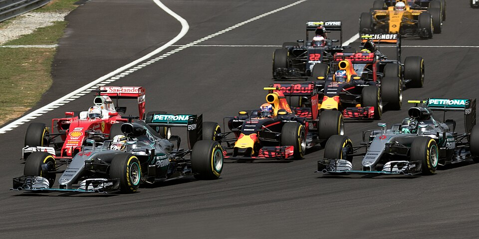
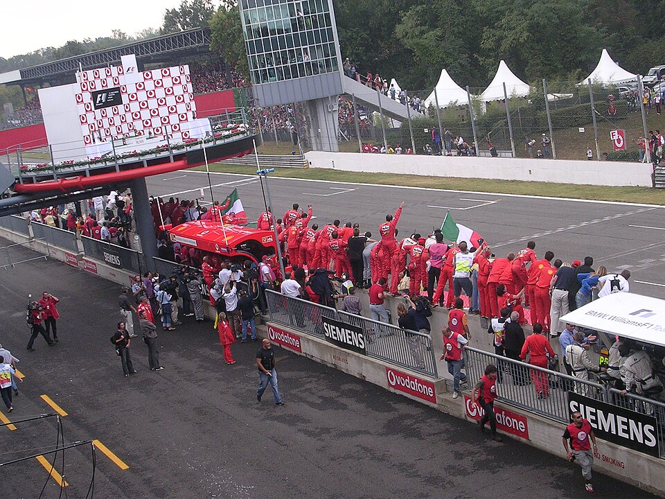

Il mondo della Formula 1
La Formula 1 è la massima espressione dell'automobilismo sportivo mondiale. Rappresenta l'apice dell'ingegneria, della velocità e del talento alla guida, dove monoposto a ruote scoperte sfrecciano a velocità che superano i 350 km/h sfidando i limiti della fisica.

Le moderne monoposto di F1 in azione.
Un po' di Storia
Nata ufficialmente nel 1950, la Formula 1 ha vissuto decenni di pura evoluzione. Dalle prime vetture a motore anteriore guidate da pionieri senza cinture di sicurezza, fino ai moderni concentrati di tecnologia ibrida e aerodinamica avanzata. È uno sport che ha incoronato leggende immortali e ha spinto l'innovazione automobilistica, introducendo tecnologie che oggi troviamo sulle auto di tutti i giorni.
I Protagonisti: Piloti e Costruttori
Il campionato si gioca su due fronti: il Titolo Mondiale Piloti e il Titolo Mondiale Costruttori.
- I Costruttori: Sono le scuderie (attualmente 11) che progettano, costruiscono e sviluppano le vetture. Esse si compongono di centinaia di individui tra cui ingegneri, tecnici e piloti i quali lavorano insieme per sviluppare le migliori soluzioni. Puoi approfondire la loro storia e le caratteristiche nella sezione Costruttori.
- I Piloti: I 22 atleti d'élite (due per ogni scuderia) che portano queste macchine al limite. Devono possedere riflessi sovrumani, una preparazione fisica estrema e una mente fredda. Per maggiori informazioni si visiti la sezione Piloti.

Il team della Ferrari durante una gara di Formula 1.
Regole base e Come Funziona
La stagione è composta da una serie di Gran Premi (gare) disputati in tutto il mondo, su circuiti chiusi o tracciati cittadini. Ecco i concetti chiave per capire un weekend di gara:
- Il Weekend: Solitamente inizia il venerdì con le Prove Libere, fondamentali per trovare l'assetto giusto. Il sabato si svolgono le Qualifiche, che determinano la griglia di partenza (chi fa il giro più veloce parte primo, in "Pole Position"). La domenica è il giorno della Gara.
- Punteggio: I primi 10 classificati al traguardo ottengono punti. Chi ne accumula di più a fine anno, vince il mondiale.
- Gomme e Pit Stop: Ogni vettura deve obbligatoriamente fermarsi ai box (Pit Stop) durante la gara per cambiare gli pneumatici, scegliendo tra mescole più morbide (più veloci ma si consumano in fretta) e mescole più dure (più lente ma resistenti). La strategia è cruciale.